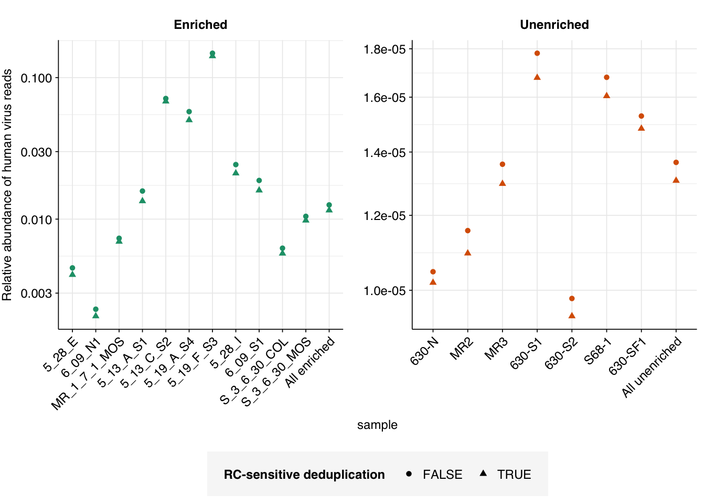

Removing reverse-complement duplicates of human-viral reads.
Author
Will Bradshaw
Published
March 1, 2024
After investigating several options in previous entries, I settled on Clumpify for deduplication of reads for my MGS pipeline. Unfortunately, Clumpify as I’m currently running it has a key flaw, which it shares with most other deduplication tools that run on paired reads: it’s unable to detect “reverse-complement” duplicates in which the forward read of one pair matches the reverse read of another & vice-versa. Since the orientation of reads is random in many cases, this will leave a random subset of duplicates undetected.
This is tolerable in many instances, but is a problem for cases where we care a lot about getting accurate read counts, such as when estimating the relative abundance of human-infecting viruses. As such, it would be great to find a solution that lets us remove these extra duplicates prior to estimating viral relative abundance.
Clumpify does have a configuration where it unpairs reads prior to deduplication, allowing them to be deduplicated as individual reads. This solves the problem above, but (a) can lead to over-removal in cases where only one read in a pair is a duplicate, and (b) typically breaks on large datasets, I think due to memory issues. Despite looking at quite a number of possible options, I was unable to find a deduplication tool that met my desiderata of (i) running on paired reads, (ii) identifying duplicates in a sensible, error-tolerant way, and (iii) handling reverse-complement duplicates.
As a result, I turned to an alternative approach, which was to restrict deduplication of the whole read set to RC-insensitive Clumpify, then apply additional, more stringent deduplication to putative human-viral reads. During the process of HV read identification, downstream of Bowtie2 but upstream of Kraken2, putative viral read pairs are merged & concatenated to produce a single sequence per read pair. This makes deduplication much easier as I can run deduplication tools on the result without needing them to specifically handle paired reads. In particular, Clumpify and its sister program Dedupe should both work well on these sequences, removing duplicates in either orientation while correctly handling errors and “containments” (partial duplicates in which one sequence is completely contained within another).
To investigate this, I downloaded the putative human-viral reads for each sample in Crits-Christoph 2021, after identification with Bowtie2 and screening against potential contaminants but before taxonomic assignment with Kraken. I ran three deduplication tools on these sequences:
Clumpify consistently removed the most reads, with Dedupe close behind and seqkit’s rmdup performing much less well. As such, I decided to implement Clumpify to remove duplicates at this point in the pipeline, then look at the effect on predicted relative abundance of viruses in one previously-analyzed dataset.
Brief re-analysis of Crits-Christoph 2021
On average, adding in RC-sensitive deduplication reduced overall HV relative abundance measurements by about 4% in unenriched samples and about 10% in panel-enriched samples in Crits-Christoph 2021:
g_phv<-ggplot(hv_reads_bound, aes(x=sample, y=p_reads_hv, color=enrichment, shape=dedup_rc))+geom_point()+scale_y_log10("Relative abundance of human virus reads")+scale_color_brewer(palette="Dark2", name="Panel enrichment")+scale_shape_discrete(name="RC-sensitive deduplication")+guides(color="none")+facet_wrap(~enrichment, scales ="free")+theme_base+theme(axis.text.x =element_text(angle=45, hjust=1))g_phv

Turning to specific viruses, just plotting out the relative abundances with and without deduplication isn’t terribly informative due to the wide log scales involved:
Code
viral_taxa_path<-file.path(data_dir, "viral-taxa.tsv.gz")viral_taxa<-read_tsv(viral_taxa_path, show_col_types =FALSE)# Get viral taxon names for putative HV readshv_named<-hv_reads_cut%>%left_join(viral_taxa, by="taxid")# Discover viral species & genera for HV readsraise_rank<-function(read_db, taxid_db, out_rank="species", verbose=FALSE){# Get higher ranks than search rankranks<-c("subspecies", "species", "subgenus", "genus", "subfamily", "family", "suborder", "order", "class", "subphylum", "phylum", "kingdom", "superkingdom")rank_match<-which.max(ranks==out_rank)high_ranks<-ranks[rank_match:length(ranks)]# Merge read DB and taxid DBreads<-read_db%>%select(-parent_taxid, -rank, -name)%>%left_join(taxid_db, by="taxid")# Extract sequences that are already at appropriate rankreads_rank<-filter(reads, rank==out_rank)# Drop sequences at a higher rank and return unclassified sequencesreads_norank<-reads%>%filter(rank!=out_rank, !rank%in%high_ranks, !is.na(taxid))while(nrow(reads_norank)>0){# As long as there are unclassified sequences...# Promote read taxids and re-merge with taxid DB, then re-classify and filterreads_remaining<-reads_norank%>%mutate(taxid =parent_taxid)%>%select(-parent_taxid, -rank, -name)%>%left_join(taxid_db, by="taxid")reads_rank<-reads_remaining%>%filter(rank==out_rank)%>%bind_rows(reads_rank)reads_norank<-reads_remaining%>%filter(rank!=out_rank, !rank%in%high_ranks, !is.na(taxid))}# Finally, extract and append reads that were excluded during the processreads_dropped<-reads%>%filter(!seq_id%in%reads_rank$seq_id)reads_out<-reads_rank%>%bind_rows(reads_dropped)%>%select(-parent_taxid, -rank, -name)%>%left_join(taxid_db, by="taxid")return(reads_out)}hv_reads_genera<-raise_rank(hv_named, viral_taxa, "genus")# Count relative abundance for generahv_genera_counts_raw<-hv_reads_genera%>%group_by(sample, enrichment, name, dedup_rc)%>%count(name="n_reads_hv")%>%inner_join(read_counts_raw, by=c("sample", "dedup_rc"))%>%mutate(p_reads_hv =n_reads_hv/n_reads_raw)hv_genera_counts_all<-hv_genera_counts_raw%>%group_by(name, enrichment, dedup_rc)%>%summarize(n_reads_hv =sum(n_reads_hv), n_reads_raw =sum(n_reads_raw), .groups ="drop")%>%mutate(sample ="All samples")hv_genera_counts_agg<-bind_rows(hv_genera_counts_raw, hv_genera_counts_all)%>%mutate(p_reads_hv =n_reads_hv/n_reads_raw)
Code
hv_genera_counts_plot<-hv_genera_counts_agg%>%filter(sample=="All samples", !is.na(name))g_genera<-ggplot(hv_genera_counts_plot,aes(x=name, y=p_reads_hv, shape=dedup_rc, color=enrichment))+geom_point()+scale_y_log10("Relative abundance of human virus reads")+scale_color_brewer(palette="Dark2", name="Panel enrichment")+scale_shape_discrete(name="RC-sensitive deduplication")+theme_kit+theme(plot.margin =margin(l=1, t=0.5, unit="cm"))g_genera
However, if we specifically look at the change in relative abundance with vs without deduplication, we do see some variation, with many viruses showing no change and others showing reductions in measured RA of up to 20%:
Going forward, I’ll include this additional deduplication step in analysis of future data.
Source Code
---title: "Improving read deduplication in the MGS workflow"subtitle: "Removing reverse-complement duplicates of human-viral reads."author: "Will Bradshaw"date: 2024-03-01format: html: code-fold: true code-tools: true code-link: true df-print: pagededitor: visualtitle-block-banner: black---```{r}#| label: load-packages#| include: falselibrary(tidyverse)library(cowplot)library(patchwork)library(fastqcr)library(RColorBrewer)source("../scripts/aux_plot-theme.R")theme_base <- theme_base +theme(aspect.ratio =NULL)theme_kit <- theme_base +theme(axis.text.x =element_text(hjust =1, angle =45),axis.title.x =element_blank(),)tnl <-theme(legend.position ="none")```After investigating several options in previous entries, I settled on Clumpify for deduplication of reads for my MGS pipeline. Unfortunately, Clumpify as I'm currently running it has a key flaw, which it shares with most other deduplication tools that run on paired reads: it's unable to detect "reverse-complement" duplicates in which the forward read of one pair matches the reverse read of another & vice-versa. Since the orientation of reads is random in many cases, this will leave a random subset of duplicates undetected.This is tolerable in many instances, but is a problem for cases where we care a lot about getting accurate read counts, such as when estimating the relative abundance of human-infecting viruses. As such, it would be great to find a solution that lets us remove these extra duplicates prior to estimating viral relative abundance.Clumpify does have a configuration where it unpairs reads prior to deduplication, allowing them to be deduplicated as individual reads. This solves the problem above, but (a) can lead to over-removal in cases where only one read in a pair is a duplicate, and (b) typically breaks on large datasets, I think due to memory issues. Despite looking at quite a number of possible options, I was unable to find a deduplication tool that met my desiderata of (i) running on paired reads, (ii) identifying duplicates in a sensible, error-tolerant way, and (iii) handling reverse-complement duplicates.As a result, I turned to an alternative approach, which was to restrict deduplication of the whole read set to RC-insensitive Clumpify, then apply additional, more stringent deduplication to putative human-viral reads. During the process of HV read identification, downstream of Bowtie2 but upstream of Kraken2, putative viral read pairs are merged & concatenated to produce a single sequence per read pair. This makes deduplication much easier as I can run deduplication tools on the result without needing them to specifically handle paired reads. In particular, Clumpify and its sister program Dedupe should both work well on these sequences, removing duplicates in either orientation while correctly handling errors and "containments" (partial duplicates in which one sequence is completely contained within another).To investigate this, I downloaded the putative human-viral reads for each sample in Crits-Christoph 2021, after identification with Bowtie2 and screening against potential contaminants but before taxonomic assignment with Kraken. I ran three deduplication tools on these sequences:- Clumpify in single-end mode``` clumpify.sh in=reads/${s}_bowtie2_mjc.fastq.gz out=clumpify/${s}.fastq.gz dedupe containment```- Dedupe in single-end mode``` dedupe.sh in=reads/${s}_bowtie2_mjc.fastq.gz out=dedupe/${s}.fastq.gz```- rmdup from the seqkit package``` seqkit rmdup -so seqkit/${s}.fastq.gz reads/${s}_bowtie2_mjc.fastq.gz```I then quantified the number of surviving sequences in each case with FASTQC and MultiQC.```{r}# Paths to datadata_dir <-"../data/2024-02-29_dedup/"raw_path <-file.path(data_dir, "multiqc/multiqc_raw_fastqc.txt")clumpify_path <-file.path(data_dir, "multiqc/multiqc_clumpify_fastqc.txt")dedupe_path <-file.path(data_dir, "multiqc/multiqc_dedupe_fastqc.txt")seqkit_path <-file.path(data_dir, "multiqc/multiqc_seqkit_fastqc.txt")# Import dataraw <-read_tsv(raw_path, show_col_types =FALSE) %>%mutate(Sample =sub("_bowtie2_mjc", "", Sample),Method ="none")clumpify <-read_tsv(clumpify_path, show_col_types =FALSE) %>%mutate(Method ="clumpify")dedupe <-read_tsv(dedupe_path, show_col_types =FALSE) %>%mutate(Method ="dedupe")seqkit <-read_tsv(seqkit_path, show_col_types =FALSE) %>%mutate(Method ="seqkit")processed <-bind_rows(raw, clumpify, dedupe, seqkit) %>%mutate(Method =fct_inorder(Method),seqs_abs =`Total Sequences`) %>%group_by(Sample) %>%mutate(seqs_rel = seqs_abs/max(seqs_abs))# Visualizeg_dedup_abs <-ggplot(processed, aes(x=Sample, y=seqs_abs, fill=Method)) +geom_col(position ="dodge") +scale_fill_brewer(palette ="Dark2") +scale_y_continuous(name="# Surviving Reads", expand =c(0,0), limits =c(0,140000), breaks =seq(0,200000,40000)) + theme_kitg_dedup_absg_dedup_rel <-ggplot(processed, aes(x=Sample, y=seqs_rel, fill=Method)) +geom_col(position ="dodge") +scale_fill_brewer(palette ="Dark2") +scale_y_continuous(name="% Surviving Reads", breaks =seq(0,1,0.2), labels =function(x) x*100, expand =c(0,0)) + theme_kitg_dedup_rel```Clumpify consistently removed the most reads, with Dedupe close behind and seqkit's rmdup performing much less well. As such, I decided to implement Clumpify to remove duplicates at this point in the pipeline, then look at the effect on predicted relative abundance of viruses in one previously-analyzed dataset.# Brief re-analysis of Crits-Christoph 2021On average, adding in RC-sensitive deduplication reduced overall HV relative abundance measurements by about 4% in unenriched samples and about 10% in panel-enriched samples in Crits-Christoph 2021:```{r}cc_dir_new <-file.path(data_dir, "cc-rerun")cc_dir_old <-file.path(data_dir, "cc-prev")basic_stats_new_path <-file.path(cc_dir_new, "qc_basic_stats.tsv")basic_stats_old_path <-file.path(cc_dir_old, "qc_basic_stats.tsv")hv_reads_new_path <-file.path(cc_dir_new, "hv_hits_putative_filtered.tsv.gz")hv_reads_old_path <-file.path(cc_dir_old, "hv_hits_putative_filtered.tsv")libraries_path <-file.path(cc_dir_new, "cc-libraries.txt")# Get raw read countsbasic_stats_new <-read_tsv(basic_stats_new_path, show_col_types =FALSE)basic_stats_old <-read_tsv(basic_stats_old_path, show_col_types =FALSE)read_counts_raw_new <- basic_stats_new %>%filter(stage =="raw_concat") %>%select(sample, n_reads_raw = n_read_pairs) %>%mutate(dedup_rc =TRUE)read_counts_raw_old <- basic_stats_old %>%filter(stage =="raw_concat") %>%select(sample, n_reads_raw = n_read_pairs) %>%mutate(dedup_rc =FALSE)read_counts_raw <-bind_rows(read_counts_raw_new, read_counts_raw_old)# Get HV read countslibraries <-read_tsv(libraries_path, show_col_types =FALSE) %>%mutate(enrichment =str_to_title(enrichment))hv_reads_new <-read_tsv(hv_reads_new_path, show_col_types =FALSE) %>%inner_join(libraries, by="sample") %>%arrange(enrichment, location, collection_date) %>%mutate(sample =fct_inorder(sample),adj_score_max =pmax(adj_score_fwd, adj_score_rev),dedup_rc =TRUE)hv_reads_old <-read_tsv(hv_reads_old_path, show_col_types =FALSE) %>%inner_join(libraries, by="sample") %>%arrange(enrichment, location, collection_date) %>%mutate(sample =fct_inorder(sample),adj_score_max =pmax(adj_score_fwd, adj_score_rev),dedup_rc =FALSE)hv_reads <-bind_rows(hv_reads_new, hv_reads_old)hv_reads_cut <- hv_reads %>%mutate(hv_status = assigned_hv | hit_hv | adj_score_max >=20)hv_reads_counts <- hv_reads_cut %>%group_by(sample, enrichment, dedup_rc) %>%count(name="n_reads_hv")# Mergehv_reads_ra <-inner_join(hv_reads_counts, read_counts_raw, by=c("sample", "dedup_rc")) %>%mutate(p_reads_hv = n_reads_hv/n_reads_raw)hv_reads_total <- hv_reads_ra %>%group_by(enrichment, dedup_rc) %>%summarize(n_reads_hv =sum(n_reads_hv), n_reads_raw =sum(n_reads_raw), .groups="drop") %>%mutate(sample =paste("All", str_to_lower(enrichment)), p_reads_hv = n_reads_hv/n_reads_raw)hv_reads_bound <-bind_rows(hv_reads_ra, hv_reads_total) %>%arrange(enrichment, dedup_rc)hv_reads_bound$sample <-fct_inorder(hv_reads_bound$sample)# Calculate effect of dedup on RAra_rel <- hv_reads_bound %>% ungroup %>%select(sample, enrichment, dedup_rc, p_reads_hv) %>%pivot_wider(names_from="dedup_rc", values_from ="p_reads_hv", names_prefix ="dedup_") %>%mutate(rel_ra = dedup_TRUE/dedup_FALSE)``````{r}g_phv <-ggplot(hv_reads_bound, aes(x=sample, y=p_reads_hv, color=enrichment, shape=dedup_rc)) +geom_point() +scale_y_log10("Relative abundance of human virus reads") +scale_color_brewer(palette="Dark2", name="Panel enrichment") +scale_shape_discrete(name="RC-sensitive deduplication") +guides(color="none") +facet_wrap(~enrichment, scales ="free") + theme_base +theme(axis.text.x =element_text(angle=45, hjust=1))g_phv```Turning to specific viruses, just plotting out the relative abundances with and without deduplication isn't terribly informative due to the wide log scales involved:```{r}#| warning: falseviral_taxa_path <-file.path(data_dir, "viral-taxa.tsv.gz")viral_taxa <-read_tsv(viral_taxa_path, show_col_types =FALSE)# Get viral taxon names for putative HV readshv_named <- hv_reads_cut %>%left_join(viral_taxa, by="taxid")# Discover viral species & genera for HV readsraise_rank <-function(read_db, taxid_db, out_rank ="species", verbose =FALSE){# Get higher ranks than search rank ranks <-c("subspecies", "species", "subgenus", "genus", "subfamily", "family", "suborder", "order", "class", "subphylum", "phylum", "kingdom", "superkingdom") rank_match <-which.max(ranks == out_rank) high_ranks <- ranks[rank_match:length(ranks)]# Merge read DB and taxid DB reads <- read_db %>%select(-parent_taxid, -rank, -name) %>%left_join(taxid_db, by="taxid")# Extract sequences that are already at appropriate rank reads_rank <-filter(reads, rank == out_rank)# Drop sequences at a higher rank and return unclassified sequences reads_norank <- reads %>%filter(rank != out_rank, !rank %in% high_ranks, !is.na(taxid))while(nrow(reads_norank) >0){ # As long as there are unclassified sequences...# Promote read taxids and re-merge with taxid DB, then re-classify and filter reads_remaining <- reads_norank %>%mutate(taxid = parent_taxid) %>%select(-parent_taxid, -rank, -name) %>%left_join(taxid_db, by="taxid") reads_rank <- reads_remaining %>%filter(rank == out_rank) %>%bind_rows(reads_rank) reads_norank <- reads_remaining %>%filter(rank != out_rank, !rank %in% high_ranks, !is.na(taxid)) }# Finally, extract and append reads that were excluded during the process reads_dropped <- reads %>%filter(!seq_id %in% reads_rank$seq_id) reads_out <- reads_rank %>%bind_rows(reads_dropped) %>%select(-parent_taxid, -rank, -name) %>%left_join(taxid_db, by="taxid")return(reads_out)}hv_reads_genera <-raise_rank(hv_named, viral_taxa, "genus")# Count relative abundance for generahv_genera_counts_raw <- hv_reads_genera %>%group_by(sample, enrichment, name, dedup_rc) %>%count(name="n_reads_hv") %>%inner_join(read_counts_raw, by=c("sample", "dedup_rc")) %>%mutate(p_reads_hv = n_reads_hv/n_reads_raw)hv_genera_counts_all <- hv_genera_counts_raw %>%group_by(name, enrichment, dedup_rc) %>%summarize(n_reads_hv =sum(n_reads_hv),n_reads_raw =sum(n_reads_raw), .groups ="drop") %>%mutate(sample ="All samples")hv_genera_counts_agg <-bind_rows(hv_genera_counts_raw, hv_genera_counts_all) %>%mutate(p_reads_hv = n_reads_hv/n_reads_raw)``````{r}hv_genera_counts_plot <- hv_genera_counts_agg %>%filter(sample =="All samples", !is.na(name))g_genera <-ggplot(hv_genera_counts_plot,aes(x=name, y=p_reads_hv, shape=dedup_rc, color=enrichment)) +geom_point() +scale_y_log10("Relative abundance of human virus reads") +scale_color_brewer(palette="Dark2", name="Panel enrichment") +scale_shape_discrete(name="RC-sensitive deduplication") + theme_kit +theme(plot.margin =margin(l=1, t=0.5, unit="cm"))g_genera``````{r}#| warning: falsehv_genera_counts_wide <- hv_genera_counts_agg %>%select(sample, enrichment, name, dedup_rc, p_reads_hv) %>%pivot_wider(names_from="enrichment", values_from="p_reads_hv") %>%mutate(Enriched =replace_na(Enriched, 0),Unenriched =replace_na(Unenriched, 0),rel_enrichment = Enriched/Unenriched,log_enrichment =log10(rel_enrichment))hv_genera_counts_rel_plot <- hv_genera_counts_wide %>%filter(sample =="All samples", log_enrichment <"Inf", log_enrichment >"-Inf")g_rel_ra <-ggplot(hv_genera_counts_rel_plot,aes(x=name, y=log_enrichment, shape=dedup_rc)) +geom_point() +scale_y_continuous(name="Log10 enrichment in panel-enriched samples",limits =c(0,5), breaks =seq(0,10,1), expand=c(0,0)) +scale_shape_discrete(name="RC-sensitive deduplication") + theme_kit +theme(plot.margin =margin(l=1, t=0.5, unit="cm"))g_rel_ra```However, if we specifically look at the *change* in relative abundance with vs without deduplication, we do see some variation, with many viruses showing no change and others showing reductions in measured RA of up to 20%:```{r}hv_genera_counts_rel_dedup <- hv_genera_counts_agg %>%filter(sample =="All samples", !is.na(name)) %>%select(sample, enrichment, name, dedup_rc, p_reads_hv) %>%pivot_wider(names_from="dedup_rc", names_prefix="dedup_", values_from="p_reads_hv", values_fill=0) %>%mutate(dedup_rel = dedup_TRUE/dedup_FALSE,dedup_rel_log =log10(dedup_rel))g_genera_rel_dedup <-ggplot(hv_genera_counts_rel_dedup,aes(x=name, y=dedup_rel, color=enrichment)) +geom_point(alpha=0.5) +scale_y_continuous("Viral relative abundance in deduplicated vs\nnon-deduplicated samples") +scale_color_brewer(palette="Dark2", name="Panel enrichment") + theme_kit +theme(plot.margin =margin(l=1, t=0.5, unit="cm"))g_genera_rel_dedup```Going forward, I'll include this additional deduplication step in analysis of future data.